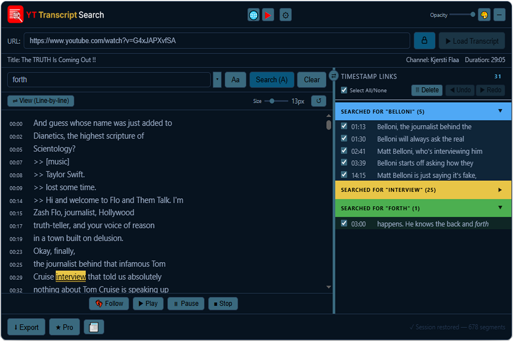

Hover any glowing dot on the interface to learn what it does. Tap any glowing dot on the interface to learn what it does.


Available in both Free and Pro
Pro feature
Hover (or tap) any glowing dot on the interface to see what that control does.